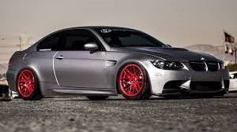
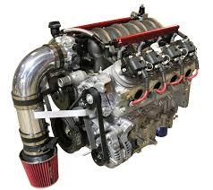
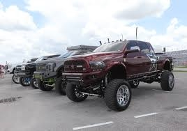
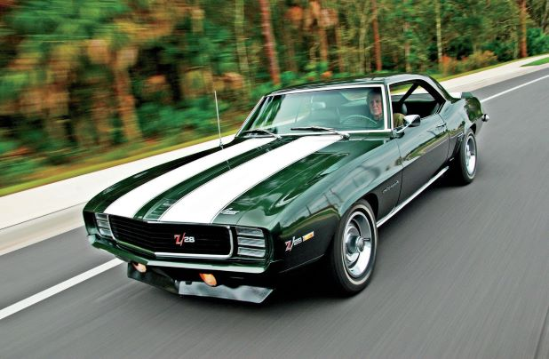
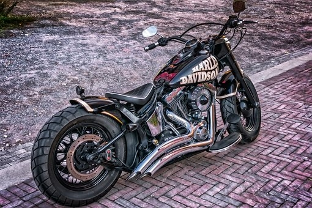
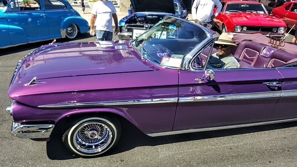
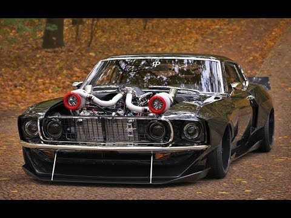

5159 AUTOWERX specializes in all things Automotive, as well as a top of the line motorcycle
fabrication and customization shop. We work on everything from Euros, Muscle Cars, Exotics,
Lowriders, Old Schools And Motorcycles.

5159 AUTOWERX builds top quality street and race engines. All dynoed in house and built to your
liking with your choice of components. We also have our own machine shop in house so we can
build and rebuild your engine to your specs.

5159 AUTOWERX is known for the sickest 4x4's. We can build custom suspensions and we carry all
the latest bolt on components. We're ready to satisfy any off-road enthusiast. From the weekend
warrior to the hardcore 4-wheeler.

5159 AUTOWERX has a first class restoration shop. Some of our restorations have won awards all
across the world. We can restore your vehicle to it's original condition. We can fabricate any
part neccessary to get the job done.

5159 AUTOWERX builds some of the baddest bikes the industry has seen. We've assembled a team of
builders that is second to none. From choppers to baggers to restorations we do it all. No job
is too big or too small.

5159 AUTOWERX takes pride in the fact that we're keeping the lowrider culture alive. Some of our
builds have graced the pages of lowrider magazine and won awards at events across the world.

5159 AUTOWERX is should be tops on your list if you're into restomods. We are on the cutting
edge when it comes to custom builds. Our innovative designs are some of the best you'll ever
see.